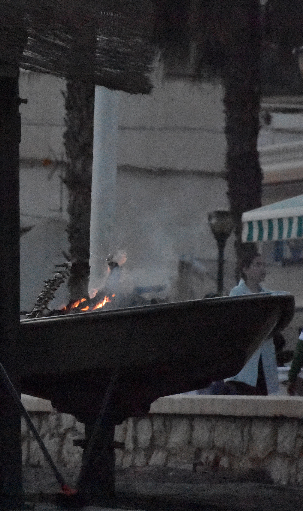
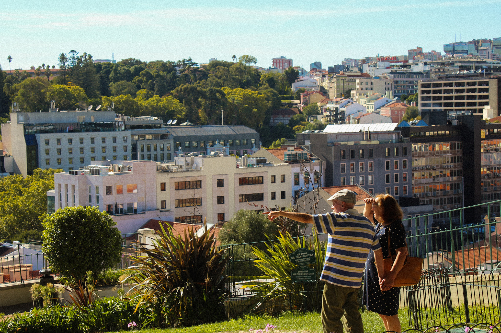

Mis 5 lugares favoritos en fotos
Intro
Hace aproximadamente un año encontré en un cajón una cámara de fotos que mi padre tenía hace tiempo. Le pregunté que si podía llevarmela a un viaje para entretenerme con algo. Fue en ese momento que conocí el arte de la fotografía. Desubrí un nuevo punto de vista de la vida, con la cámara empecé a darme cuenta de las pequeñas cosas que tenemos en nuestro día a día, empecé a fijarme más en los detalles, en lo cotidiano y en las cosas nuevas allá a donde iba proporcionandome otro enfoque de las cosas. Empecé a crear,a querer capturar momentos y convertirlos en recuerdos que quedasen guardados como obras de arte.
Firenze
 Florencia, la joya renacentista de Italia, cautiva a los visitantes con su increíble patrimonio artístico y su encanto histórico. Cada rincón de esta ciudad rebosa de belleza y cultura, transportándote a épocas pasadas y sumergiéndote en un ambiente de elegancia y sofisticación.
Florencia, la joya renacentista de Italia, cautiva a los visitantes con su increíble patrimonio artístico y su encanto histórico. Cada rincón de esta ciudad rebosa de belleza y cultura, transportándote a épocas pasadas y sumergiéndote en un ambiente de elegancia y sofisticación.
 Vídeo de fotografía en Italia
Vídeo de fotografía en Italia
Pedregalejo

Sus calles empedradas y casas blancas de antiguos pescadores crean un ambiente pintoresco y único. Sus playas de arena fina invitan a relajarse y disfrutar de la tranquilidad de la playa y el sonido del mar. La deliciosa gastronomía local es otro atractivo destacado, con sus magníficos camperos. Pedregalejo es el lugar ideal para desconectar y disfrutar de la playa.
 Made in el Palo
Pedregalejo
Made in el Palo
Pedregalejo
Grana' tierra de Dellafuente
 Granada es un sitio que has de visitar una vez al menos en tu vida, una ciudad que destaca por su gran patrimonio histórico, con verdaderas obras de arte como la Alhambra, los grandes jardines y los auténticos barrios de alrededores... Y como olvidar a su gente y las tapas jeje. Lo que quizás más me gusta de Granada son los jardines de Generalife y de alrededor de la Alhambra. Un lugar donde puedes disfrutar de su gran tranquilidad y paz, con unas bellas vistas de sus intensos jardines acompañados del fluir del agua.
Granada es un sitio que has de visitar una vez al menos en tu vida, una ciudad que destaca por su gran patrimonio histórico, con verdaderas obras de arte como la Alhambra, los grandes jardines y los auténticos barrios de alrededores... Y como olvidar a su gente y las tapas jeje. Lo que quizás más me gusta de Granada son los jardines de Generalife y de alrededor de la Alhambra. Un lugar donde puedes disfrutar de su gran tranquilidad y paz, con unas bellas vistas de sus intensos jardines acompañados del fluir del agua.
 Dellafuente
Los hermanos del Albaicín
Dellafuente
Los hermanos del Albaicín
Portugal
 Portugal, el país vecino, que personalmente, para mí era el eterno olvidado, nunca me había despertado ningún interés, pero hace poco se me presentó la oportunidad de ir y cambió totalmente la percepción que tenía de él. Un país muy cercano y humilde, con unas magníficas costas como Cascais, Albufeira o el Algarve dignas de disfrutar. Lisboa es una capital repleta de vida, monumentos, arte y miradores donde puedes disfrutar de unas buenas vistas de la ciudad.
Portugal, el país vecino, que personalmente, para mí era el eterno olvidado, nunca me había despertado ningún interés, pero hace poco se me presentó la oportunidad de ir y cambió totalmente la percepción que tenía de él. Un país muy cercano y humilde, con unas magníficas costas como Cascais, Albufeira o el Algarve dignas de disfrutar. Lisboa es una capital repleta de vida, monumentos, arte y miradores donde puedes disfrutar de unas buenas vistas de la ciudad.

Himno de Portugal
Nápoles
 Nápoles, ciudad de Diego Armando Maradona, una ciudad vibrante y llena de vida en la costa sur de Italia, te seduce con su energía y autenticidad, con su combinación única de caos y encanto. Una experiencia única donde lo tradicional y lo moderno se entrelazan en perfecta armonía.
Nápoles, ciudad de Diego Armando Maradona, una ciudad vibrante y llena de vida en la costa sur de Italia, te seduce con su energía y autenticidad, con su combinación única de caos y encanto. Una experiencia única donde lo tradicional y lo moderno se entrelazan en perfecta armonía.
 Video de Maradona calentando
Trailer de "Fue de la mano de Dios
Video de Maradona calentando
Trailer de "Fue de la mano de Dios
Mi 10 películas favoritas
Imaginate una secuencia de fotografías, junto a una gran historia, y acompañada de una bella banda sonora... Con la fusión de todo ello obtenemos el séptimo arte, la fusión de las artes, el CINE. Como dijo el gran filósofo español, Ortega y Gasset "ver es pensar con los ojos".
Si te ha gustado mi página web te sugiero que le eches un ojo a este enlace donde he puesto una tabla con algunas de mis películas favoritas :P
Mi top ten películas